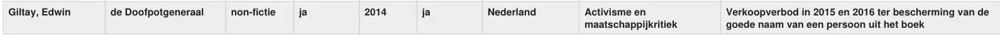

Prueba · Selección de lecturas
Selección de lecturas de la Week van het Verboden Boek, 2026
El pasaje
«Autor: Giltay, Edwin. Título: de Doofpotgeneraal. Categoría: no ficción. Disponible: sí. Año de publicación: 2014. Traducido: sí. País de prohibición o censura: Países Bajos. Motivo: Activismo y crítica social. Comentario: Prohibición de venta en 2015 y 2016 para proteger el buen nombre de una persona que aparece en el libro». La mención de De doofpotgeneraal, página 1, tercera fila de la tabla. Los encabezados de las columnas figuran una sola vez encima de la tabla y aquí se repiten delante de cada valor. Traducido del neerlandés; el texto original figura a continuación. De doofpotgeneraal es el título original neerlandés del libro El general del encubrimiento.
Texto original
“Giltay, Edwin · de Doofpotgeneraal · non-fictie · ja · 2014 · ja · Nederland · Activisme en maatschappijkritiek · Verkoopverbod in 2015 en 2016 ter bescherming van de goede naam van een persoon uit het boek” La mención es una fila de una tabla. Sus celdas ocupan columnas distintas; aquí se suceden, separadas por un punto medio. La lista escribe el título «de Doofpotgeneraal», con d minúscula y D mayúscula.

Por qué importa este documento
Esta selección de lecturas de la Week van het Verboden Boek (Semana del Libro Prohibido) 2026, la campaña nacional neerlandesa por la libertad de expresión, sitúa El general del encubrimiento junto a Madame Bovary de Gustave Flaubert y el Diario de Ana Frank (Het Achterhuis), y señala a los Países Bajos como país de la prohibición. Como motivo indica el activismo y la crítica social, y en el comentario menciona la prohibición de venta de 2015 y 2016, impuesta para proteger el buen nombre de una persona que aparece en el libro. El ensayo observa que, en su propio país, el libro figura en la selección de lecturas de la campaña. Esta se celebró en 2026, del 19 al 27 de septiembre.
Procedencia
- Documento
- Selección de lecturas, fragmento con la mención de De doofpotgeneraal y las dos filas que la preceden
- Publicación
- Tiplijst Week van het Verboden Boek 2026 (lista de recomendaciones de la Semana del Libro Prohibido 2026), CPNB
- Campaña
- Week van het Verboden Boek, campaña nacional por la libertad de expresión, una iniciativa de Probiblio, la CPNB, PEN Nederland, la Schrijverscentrale y la Koninklijke Boekverkopersbond
- Mención
- Giltay, Edwin, de Doofpotgeneraal, no ficción, disponible, publicado en 2014, traducido, Países Bajos, Activismo y crítica social
- Otros registros mostrados
- Gustave Flaubert, Madame Bovary (1856), Francia; Anne Frank, Het Achterhuis (1947), Estados Unidos
- Fecha
- 2026. La lista no lleva fecha propia, solo el año de la campaña. El fragmento se tomó el 12 de julio de 2026
- Tema
- Libros prohibidos y cuestionados, ordenados por autor, título, categoría, año de publicación, país de prohibición o censura, y motivo
- Idioma
- Neerlandés
- Fuente
- Fragmento en dedoofpotgeneraal.
nl/ doc/ tiplijst.pdf
Citado en: el ensayo «La prohibición cayó, el libro quedó en pie» en los capítulos (5) «Más que un libro prohibido» y (9) «Registrado para siempre».
Ficha de prueba: https://
Documento: https://
Modificado por última vez el 12 de julio de 2026, consultado el 26 de noviembre de 2026.

Esta página es una ficha de prueba del libro El general del encubrimiento de Edwin Giltay y del sitio web que lo acompaña.